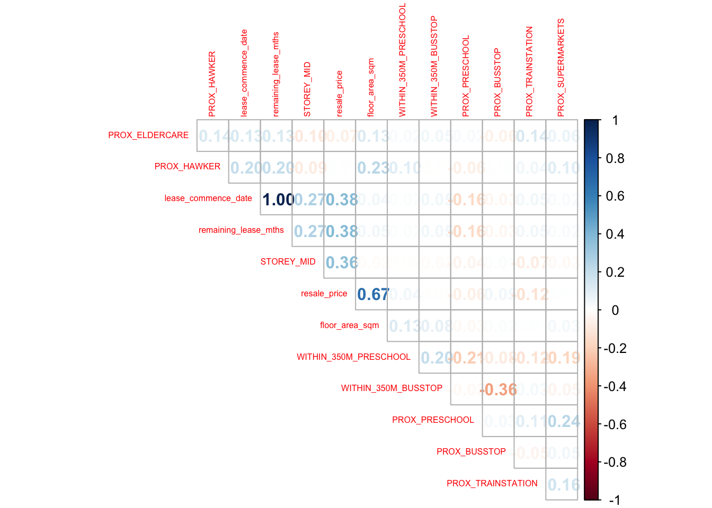

setwd('/Users/zishengwong/R Coding/ISSS626 Geospatial Analytics/Take Home Exercise/Take Home Exercise 3')Take_Home_Ex03
Setting the Scene
Housing is an essential component of household wealth worldwide. Purchasing a home has always represented a major investment for most individuals. The price of housing is influenced by a wide range of factors. Some are macro-level, such as the overall state of the economy or the inflation rate, while others are property-specific. These can be further categorized into structural and locational factors.
Structural factors refer to the characteristics of the property itself, such as size, fittings, and tenure. Locational factors, on the other hand, relate to the neighbourhood context of the property, including proximity to childcare centres, public transport, and shopping facilities.
Traditionally, housing resale price models have been estimated using the Ordinary Least Squares (OLS) method. However, this approach does not account for spatial autocorrelation and spatial heterogeneity, which are commonly present in geographic datasets such as housing transactions. When spatial autocorrelation exists, OLS estimation of housing resale price models may produce biased, inconsistent, or inefficient results (Anselin, 1998). To address these limitations, Geographically Weighted Models (GWMs) have been introduced to more accurately calibrate both explanatory and predictive models for housing resale prices.
Objective
The objective of this take-home exercise is to develop a spatially informed model to determine factors affecting or to predict HDB resale prices in Singapore, making use of appropriate geospatial analytics methods.
pacman::p_load(httr, tidyverse, sf, tmap,
jsonlite, progress)pacman::p_load(sf, spdep, GWmodel, SpatialML,
tmap, rsample, Metrics, tidyverse)Geocoding HDB resale data
HDBresale <- read_csv(
"data/rawdata/HDBresale.csv") %>%
filter(month >= "2024-07" & month <= "2025-06")Rows: 218676 Columns: 11
── Column specification ────────────────────────────────────────────────────────
Delimiter: ","
chr (8): month, town, flat_type, block, street_name, storey_range, flat_mode...
dbl (3): floor_area_sqm, lease_commence_date, resale_price
ℹ Use `spec()` to retrieve the full column specification for this data.
ℹ Specify the column types or set `show_col_types = FALSE` to quiet this message.Combining the block and street name into an address. The addresses will be used to geocode instead of postal code that you learned in In-class Exercise 3b,
Passing the address as the searchVal in our query,
Sending the query to OneMapSG search. Note: Since we don’t need all the address details, we can set getAddrDetails as ‘N’,
Converting response (JSON object) to text,
Saving response in text form as a dataframe, and
Retain the latitude and longitude for our output.
geocode <- function(block, streetname) {
base_url <- "https://onemap.gov.sg/api/common/elastic/search"
address <- paste(block, streetname, sep = " ")
query <- list("searchVal" = address,
"returnGeom" = "Y",
"getAddrDetails" = "N",
"pageNum" = "1")
res <- GET(base_url, query = query)
restext<-content(res, as="text")
output <- fromJSON(restext) %>%
as.data.frame %>%
select(results.LATITUDE, results.LONGITUDE)
return(output)
}Proximity Analysis
Convert HDBresale to sf object
HDBresale_sf <- HDBresale %>%
st_as_sf(
coords = c("LONGITUDE", "LATITUDE"),
crs=4326) %>%
st_transform(crs = 3414)Preschool
preschool = st_read(
"data/rawdata/PreSchoolsLocation.kml") %>%
st_transform(crs= 3414)Reading layer `PRESCHOOLS_LOCATION' from data source
`/Users/zishengwong/R Coding/ISSS626 Geospatial Analytics/Take Home Exercise/Take Home Exercise 3/data/rawdata/PreSchoolsLocation.kml'
using driver `KML'
Simple feature collection with 2290 features and 2 fields
Geometry type: POINT
Dimension: XYZ
Bounding box: xmin: 103.6878 ymin: 1.247759 xmax: 103.9897 ymax: 1.462134
z_range: zmin: 0 zmax: 0
Geodetic CRS: WGS 84within_350m_preschool <- st_is_within_distance(
HDBresale_sf, preschool, dist = 350)
HDBresale_sf <- HDBresale_sf %>%
mutate(WITHIN_350M_PRESCHOOL = map_int(within_350m_preschool, length))HDBresale_sf <- HDBresale_sf %>%
mutate(
PROX_PRESCHOOL = as.numeric(
st_distance(geometry,
preschool[st_nearest_feature(
geometry, preschool), ],
by_element = TRUE)
)
)Eldercare
eldercare = st_read(
"./data/EldercareServicesKML.kml") %>%
st_transform(crs= 3414)Reading layer `ELDERCARE' from data source
`/Users/zishengwong/R Coding/ISSS626 Geospatial Analytics/Take Home Exercise/Take Home Exercise 3/data/EldercareServicesKML.kml'
using driver `KML'
Simple feature collection with 133 features and 2 fields
Geometry type: POINT
Dimension: XYZ
Bounding box: xmin: 103.7119 ymin: 1.271472 xmax: 103.9561 ymax: 1.439561
z_range: zmin: 0 zmax: 0
Geodetic CRS: WGS 84HDBresale_sf <- HDBresale_sf %>%
mutate(
PROX_ELDERCARE = as.numeric(
st_distance(geometry,
eldercare[st_nearest_feature(
geometry, eldercare), ],
by_element = TRUE)
)
)Hawker center
hawkercenter = st_read(
"./data/HawkerCentresKML.kml") %>%
st_transform(crs= 3414)Reading layer `HAWKERCENTRE' from data source
`/Users/zishengwong/R Coding/ISSS626 Geospatial Analytics/Take Home Exercise/Take Home Exercise 3/data/HawkerCentresKML.kml'
using driver `KML'
Simple feature collection with 125 features and 2 fields
Geometry type: POINT
Dimension: XYZ
Bounding box: xmin: 103.6974 ymin: 1.272716 xmax: 103.9882 ymax: 1.449017
z_range: zmin: 0 zmax: 0
Geodetic CRS: WGS 84HDBresale_sf <- HDBresale_sf %>%
mutate(
PROX_HAWKER = as.numeric(
st_distance(geometry,
hawkercenter[st_nearest_feature(
geometry, hawkercenter), ],
by_element = TRUE)
)
)SuperMarkets
supermarkets = st_read(
"./data/SupermarketsKML.kml") %>%
st_transform(crs= 3414)Reading layer `SUPERMARKETS' from data source
`/Users/zishengwong/R Coding/ISSS626 Geospatial Analytics/Take Home Exercise/Take Home Exercise 3/data/SupermarketsKML.kml'
using driver `KML'
Simple feature collection with 526 features and 2 fields
Geometry type: POINT
Dimension: XYZ
Bounding box: xmin: 103.6258 ymin: 1.24715 xmax: 104.0036 ymax: 1.461526
z_range: zmin: 0 zmax: 0
Geodetic CRS: WGS 84HDBresale_sf <- HDBresale_sf %>%
mutate(
PROX_SUPERMARKETS = as.numeric(
st_distance(geometry,
supermarkets[st_nearest_feature(
geometry, supermarkets), ],
by_element = TRUE)
)
)Busstops
BusStop = st_read(dsn = "data/LTADataMall/",
layer = "BusStop") %>%
st_transform(crs = 3414)Reading layer `BusStop' from data source
`/Users/zishengwong/R Coding/ISSS626 Geospatial Analytics/Take Home Exercise/Take Home Exercise 3/data/LTADataMall'
using driver `ESRI Shapefile'
Simple feature collection with 5172 features and 2 fields
Geometry type: POINT
Dimension: XY
Bounding box: xmin: 3970.122 ymin: 26482.1 xmax: 48285.52 ymax: 52983.82
Projected CRS: SVY21within_350m_bus <- st_is_within_distance(
HDBresale_sf, BusStop, dist = 350)
HDBresale_sf <- HDBresale_sf %>%
mutate(WITHIN_350M_BUSSTOP = map_int(within_350m_bus, length))HDBresale_sf <- HDBresale_sf %>%
mutate(
PROX_BUSSTOP = as.numeric(
st_distance(geometry,
BusStop[st_nearest_feature(
geometry, BusStop), ],
by_element = TRUE)
)
)Train Station
Sys.setenv(OGR_GEOMETRY_ACCEPT_UNCLOSED_RING = "NO")
TrainStation <- st_read(
dsn = "data/TrainStation/",
layer = "RapidTransitSystemStation"
) %>%
st_transform(crs = 3414)Reading layer `RapidTransitSystemStation' from data source
`/Users/zishengwong/R Coding/ISSS626 Geospatial Analytics/Take Home Exercise/Take Home Exercise 3/data/TrainStation'
using driver `ESRI Shapefile'Warning in CPL_read_ogr(dsn, layer, query, as.character(options), quiet, : GDAL
Error 1: Non closed ring detected.Simple feature collection with 231 features and 7 fields (with 1 geometry empty)
Geometry type: MULTIPOLYGON
Dimension: XY
Bounding box: xmin: 6068.209 ymin: 27478.44 xmax: 45377.5 ymax: 47913.58
Projected CRS: SVY21HDBresale_sf <- HDBresale_sf %>%
mutate(
PROX_TRAINSTATION = as.numeric(
st_distance(geometry,
TrainStation[st_nearest_feature(
geometry, TrainStation), ],
by_element = TRUE)
)
)Primary School
PrimarySchool <- read_csv("data/Generalinformationofschools.csv")Rows: 337 Columns: 31
── Column specification ────────────────────────────────────────────────────────
Delimiter: ","
chr (30): school_name, url_address, address, telephone_no, telephone_no_2, f...
dbl (1): postal_code
ℹ Use `spec()` to retrieve the full column specification for this data.
ℹ Specify the column types or set `show_col_types = FALSE` to quiet this message.geocode_postal <- function(postal_code) {
base_url <- "https://www.onemap.gov.sg/api/common/elastic/search"
query <- list(
searchVal = postal_code,
returnGeom = "Y",
getAddrDetails = "N",
pageNum = "1"
)
res <- try(httr::GET(base_url, query = query), silent = TRUE)
if (inherits(res, "try-error")) return(c(NA, NA))
restext <- httr::content(res, as = "text", encoding = "UTF-8")
# parse JSON safely
output <- try(jsonlite::fromJSON(restext), silent = TRUE)
if (inherits(output, "try-error")) return(c(NA, NA))
# Check if results exist and are a list
if (!is.null(output$results) && length(output$results) > 0) {
first_result <- output$results[[1]]
if (is.list(first_result) && all(c("LATITUDE", "LONGITUDE") %in% names(first_result))) {
lat <- as.numeric(first_result$LATITUDE)
lon <- as.numeric(first_result$LONGITUDE)
return(c(lat, lon))
}
}
# fallback if results missing or malformed
return(c(NA, NA))
}library(dplyr)
library(purrr)
library(tibble)
coords <- map_dfr(PrimarySchool$postal_code, function(code) {
Sys.sleep(0.5) # polite delay to avoid rate limits
latlon <- geocode_postal(code)
tibble(LATITUDE = latlon[1], LONGITUDE = latlon[2])
})
PrimarySchool <- bind_cols(PrimarySchool, coords)PrimarySchool_sf <- PrimarySchool %>%
filter(!is.na(LATITUDE) & !is.na(LONGITUDE)) %>%
st_as_sf(coords = c("LONGITUDE", "LATITUDE"), crs = 4326) %>%
st_transform(crs = 3414)Warning in min(cc[[1]], na.rm = TRUE): no non-missing arguments to min;
returning InfWarning in min(cc[[2]], na.rm = TRUE): no non-missing arguments to min;
returning InfWarning in max(cc[[1]], na.rm = TRUE): no non-missing arguments to max;
returning -InfWarning in max(cc[[2]], na.rm = TRUE): no non-missing arguments to max;
returning -InfHDBresale_sf <- HDBresale_sf %>%
mutate(
PROX_PRIMARYSCHOOL = as.numeric(
st_distance(
geometry,
PrimarySchool_sf[st_nearest_feature(geometry, PrimarySchool_sf), ],
by_element = TRUE
)
)
)Preprocess columns
HDBresale_sf <- HDBresale_sf %>%
mutate(
STOREY_MID = str_extract(storey_range, "^\\d+") %>% as.numeric() +
(str_extract(storey_range, "\\d+$") %>% as.numeric() -
str_extract(storey_range, "^\\d+") %>% as.numeric()) / 2
)
HDBresale_sf <- HDBresale_sf %>%
mutate(
# Extract number of years
lease_years = str_extract(remaining_lease, "\\d+(?= years)") %>% as.numeric() %>% replace_na(0),
# Extract number of months
lease_months = str_extract(remaining_lease, "\\d+(?= months)") %>% as.numeric() %>% replace_na(0),
# Compute total months
remaining_lease_mths = lease_years * 12 + lease_months
) %>%
select(-lease_years, -lease_months) # optional: drop intermediate columnsHDBresale_sf <- HDBresale_sf %>%
mutate(across(c(PROX_PRESCHOOL,PROX_ELDERCARE, PROX_HAWKER, PROX_TRAINSTATION,
PROX_SUPERMARKETS,PROX_BUSSTOP,PROX_PRIMARYSCHOOL),
~ . / 1000)) # convert meters to kmsummary(HDBresale_sf) month town flat_type block
Length:27140 Length:27140 Length:27140 Length:27140
Class :character Class :character Class :character Class :character
Mode :character Mode :character Mode :character Mode :character
street_name storey_range floor_area_sqm flat_model
Length:27140 Length:27140 Min. : 31.00 Length:27140
Class :character Class :character 1st Qu.: 74.00 Class :character
Mode :character Mode :character Median : 93.00 Mode :character
Mean : 95.01
3rd Qu.:111.00
Max. :366.70
lease_commence_date remaining_lease resale_price geometry
Min. :1966 Length:27140 Min. : 245000 POINT :27140
1st Qu.:1985 Class :character 1st Qu.: 500000 epsg:3414 : 0
Median :1998 Mode :character Median : 616888 +proj=tmer...: 0
Mean :1998 Mean : 637612
3rd Qu.:2015 3rd Qu.: 745000
Max. :2021 Max. :1658888
WITHIN_350M_PRESCHOOL PROX_PRESCHOOL PROX_ELDERCARE PROX_HAWKER
Min. : 0.000 Min. :1.000e-08 Min. :0.0000 Min. :0.006981
1st Qu.: 3.000 1st Qu.:6.931e-02 1st Qu.:0.3197 1st Qu.:0.355422
Median : 5.000 Median :1.112e-01 Median :0.6326 Median :0.634175
Mean : 5.395 Mean :1.202e-01 Mean :0.8071 Mean :0.747174
3rd Qu.: 7.000 3rd Qu.:1.616e-01 3rd Qu.:1.1220 3rd Qu.:1.001135
Max. :25.000 Max. :2.952e+00 Max. :4.7808 Max. :2.867630
PROX_SUPERMARKETS WITHIN_350M_BUSSTOP PROX_BUSSTOP PROX_TRAINSTATION
Min. :0.0000 Min. : 0.000 Min. :0.01543 Min. :0.009112
1st Qu.:0.1818 1st Qu.: 6.000 1st Qu.:0.07410 1st Qu.:0.266236
Median :0.2794 Median : 8.000 Median :0.10777 Median :0.470121
Mean :0.3063 Mean : 7.938 Mean :0.11415 Mean :0.551007
3rd Qu.:0.3935 3rd Qu.:10.000 3rd Qu.:0.14566 3rd Qu.:0.752641
Max. :3.3254 Max. :19.000 Max. :0.37743 Max. :3.446893
PROX_PRIMARYSCHOOL STOREY_MID remaining_lease_mths
Min. : NA Min. : 2.00 Min. : 480.0
1st Qu.: NA 1st Qu.: 5.00 1st Qu.: 716.0
Median : NA Median : 8.00 Median : 871.0
Mean :NaN Mean : 8.76 Mean : 875.1
3rd Qu.: NA 3rd Qu.:11.00 3rd Qu.:1073.0
Max. : NA Max. :50.00 Max. :1147.0
NA's :27140 Primary school has entirely NaNs, we will remove it from analysis.
Correlation analysis
HDBresale_sf_copy <- HDBresale_sf # simple deep copynumeric_cols <- HDBresale_sf_copy %>% st_drop_geometry() %>%
select(where(is.numeric)) %>%
select(where(~ !all(is.na(.)) & var(., na.rm = TRUE) > 0))library(corrplot)corrplot 0.95 loadedcorrplot(
cor(numeric_cols, use = "pairwise.complete.obs"), # handle NA
diag = FALSE,
order = "AOE",
tl.pos = "td",
tl.cex = 0.5,
method = "number",
type = "upper"
)
remaining_lease_mths and lease_commence_data have high collinearity. However we will only be using remaining_lease_mths hence it is not a problem.
No other columns have high collinearlity, we will include all in analysis.
GWR method
Computing adaptive bandwidth
bw_adaptive <- bw.gwr(
formula = resale_price ~ floor_area_sqm +
STOREY_MID + remaining_lease_mths + PROX_ELDERCARE + PROX_HAWKER + PROX_PRESCHOOL + PROX_BUSSTOP+
PROX_TRAINSTATION + PROX_SUPERMARKETS + WITHIN_350M_BUSSTOP + WITHIN_350M_PRESCHOOL,
data=HDBresale_sf,
approach="CV",
kernel="gaussian",
adaptive=TRUE,
longlat=FALSE)Take a cup of tea and have a break, it will take a few minutes.
-----A kind suggestion from GWmodel development group
Adaptive bandwidth: 16781 CV score: 2.507709e+14
Adaptive bandwidth: 10379 CV score: 2.267425e+14
Adaptive bandwidth: 6422 CV score: 1.941914e+14
Adaptive bandwidth: 3976 CV score: 1.543408e+14
Adaptive bandwidth: 2465 CV score: 1.226496e+14
Adaptive bandwidth: 1530 CV score: 1.028817e+14
Adaptive bandwidth: 953 CV score: 9.096898e+13
Adaptive bandwidth: 595 CV score: 7.954776e+13
Adaptive bandwidth: 375 CV score: 7.022264e+13
Adaptive bandwidth: 238 CV score: 6.325561e+13
Adaptive bandwidth: 154 CV score: 5.632266e+13
Adaptive bandwidth: 101 CV score: 5.027229e+13
Adaptive bandwidth: 69 CV score: 4.611989e+13
Adaptive bandwidth: 48 CV score: NaN
Adaptive bandwidth: 80 CV score: 4.767871e+13
Adaptive bandwidth: 60 CV score: 4.482915e+13
Adaptive bandwidth: 56 CV score: 4.432179e+13
Adaptive bandwidth: 52 CV score: NaN
Adaptive bandwidth: 57 CV score: 4.445572e+13
Adaptive bandwidth: 54 CV score: 4.410161e+13
Adaptive bandwidth: 54 CV score: 4.410161e+13 write_rds(bw_adaptive, "data/model/bw_adaptive.rds")bw_adaptive <- read_rds("data/model/bw_adaptive.rds")Constructing adaptive bandwidth gwr model
gwr_adaptive <- gwr.basic(
formula = resale_price ~ floor_area_sqm +
STOREY_MID + remaining_lease_mths + PROX_ELDERCARE + PROX_HAWKER + PROX_PRESCHOOL + PROX_BUSSTOP+
PROX_TRAINSTATION + PROX_SUPERMARKETS + WITHIN_350M_BUSSTOP + WITHIN_350M_PRESCHOOL,
data=HDBresale_sf,
bw=bw_adaptive,
kernel = 'gaussian',
adaptive=TRUE,
longlat = FALSE)write_rds(gwr_adaptive, "data/model/gwr_adaptive.rds")gwr_adaptive <- read_rds("data/model/gwr_adaptive.rds")
gwr_adaptive ***********************************************************************
* Package GWmodel *
***********************************************************************
Program starts at: 2025-11-16 20:29:23.988363
Call:
gwr.basic(formula = resale_price ~ floor_area_sqm + STOREY_MID +
remaining_lease_mths + PROX_ELDERCARE + PROX_HAWKER + PROX_PRESCHOOL +
PROX_BUSSTOP + PROX_TRAINSTATION + PROX_SUPERMARKETS + WITHIN_350M_BUSSTOP +
WITHIN_350M_PRESCHOOL, data = HDBresale_sf, bw = bw_adaptive,
kernel = "gaussian", adaptive = TRUE, longlat = FALSE)
Dependent (y) variable: resale_price
Independent variables: floor_area_sqm STOREY_MID remaining_lease_mths PROX_ELDERCARE PROX_HAWKER PROX_PRESCHOOL PROX_BUSSTOP PROX_TRAINSTATION PROX_SUPERMARKETS WITHIN_350M_BUSSTOP WITHIN_350M_PRESCHOOL
Number of data points: 27140
***********************************************************************
* Results of Global Regression *
***********************************************************************
Call:
lm(formula = formula, data = data)
Residuals:
Min 1Q Median 3Q Max
-530861 -67454 -13621 48619 638268
Coefficients:
Estimate Std. Error t value Pr(>|t|)
(Intercept) -1.754e+05 4.991e+03 -35.145 < 2e-16 ***
floor_area_sqm 5.924e+03 2.728e+01 217.174 < 2e-16 ***
STOREY_MID 8.033e+03 1.121e+02 71.657 < 2e-16 ***
remaining_lease_mths 3.745e+02 3.735e+00 100.272 < 2e-16 ***
PROX_ELDERCARE -4.278e+04 1.018e+03 -42.045 < 2e-16 ***
PROX_HAWKER -7.053e+04 1.323e+03 -53.312 < 2e-16 ***
PROX_PRESCHOOL 4.219e+04 7.501e+03 5.624 1.88e-08 ***
PROX_BUSSTOP 2.242e+04 1.240e+04 1.808 0.0706 .
PROX_TRAINSTATION -5.748e+04 1.730e+03 -33.233 < 2e-16 ***
PROX_SUPERMARKETS 1.553e+04 3.647e+03 4.257 2.08e-05 ***
WITHIN_350M_BUSSTOP -3.828e+03 2.424e+02 -15.789 < 2e-16 ***
WITHIN_350M_PRESCHOOL -2.055e+03 2.413e+02 -8.517 < 2e-16 ***
---Significance stars
Signif. codes: 0 '***' 0.001 '**' 0.01 '*' 0.05 '.' 0.1 ' ' 1
Residual standard error: 103300 on 27128 degrees of freedom
Multiple R-squared: 0.7231
Adjusted R-squared: 0.723
F-statistic: 6441 on 11 and 27128 DF, p-value: < 2.2e-16
***Extra Diagnostic information
Residual sum of squares: 2.893022e+14
Sigma(hat): 103249.3
AIC: 703701.2
AICc: 703701.2
BIC: 676800.7
***********************************************************************
* Results of Geographically Weighted Regression *
***********************************************************************
*********************Model calibration information*********************
Kernel function: gaussian
Adaptive bandwidth: 54 (number of nearest neighbours)
Regression points: the same locations as observations are used.
Distance metric: Euclidean distance metric is used.
****************Summary of GWR coefficient estimates:******************
Min. 1st Qu. Median 3rd Qu.
Intercept -5.2374e+07 -4.7635e+05 -3.0231e+05 -1.3175e+05
floor_area_sqm 3.1511e+03 5.2235e+03 5.9668e+03 6.9349e+03
STOREY_MID 5.1025e+02 3.6065e+03 4.5304e+03 5.3680e+03
remaining_lease_mths -4.5101e+03 2.6123e+02 4.1465e+02 5.9670e+02
PROX_ELDERCARE -3.2510e+07 -4.8145e+04 1.2991e+03 5.6318e+04
PROX_HAWKER -3.4608e+07 -6.5357e+04 -1.1072e+04 5.9969e+04
PROX_PRESCHOOL -7.4087e+06 -6.9016e+04 -5.3579e+02 7.0239e+04
PROX_BUSSTOP -6.3234e+07 -1.0218e+05 -1.6644e+04 6.4708e+04
PROX_TRAINSTATION -2.8348e+08 -1.2821e+05 -7.0835e+04 -6.6444e+03
PROX_SUPERMARKETS -3.9675e+06 -8.1318e+04 -2.1589e+04 4.1077e+04
WITHIN_350M_BUSSTOP -2.6362e+04 -2.5442e+03 1.2616e+02 2.8882e+03
WITHIN_350M_PRESCHOOL -1.4072e+05 -2.3089e+03 6.6162e+02 3.3863e+03
Max.
Intercept 7.4881e+06
floor_area_sqm 1.3616e+04
STOREY_MID 1.2611e+04
remaining_lease_mths 1.7031e+03
PROX_ELDERCARE 5.9095e+07
PROX_HAWKER 1.8757e+08
PROX_PRESCHOOL 1.9862e+07
PROX_BUSSTOP 4.0523e+06
PROX_TRAINSTATION 5.3070e+07
PROX_SUPERMARKETS 8.2365e+07
WITHIN_350M_BUSSTOP 2.1025e+05
WITHIN_350M_PRESCHOOL 1.5864e+06
************************Diagnostic information*************************
Number of data points: 27140
Effective number of parameters (2trace(S) - trace(S'S)): 2964.726
Effective degrees of freedom (n-2trace(S) + trace(S'S)): 24175.27
AICc (GWR book, Fotheringham, et al. 2002, p. 61, eq 2.33): 652124.8
AIC (GWR book, Fotheringham, et al. 2002,GWR p. 96, eq. 4.22): 649372.1
BIC (GWR book, Fotheringham, et al. 2002,GWR p. 61, eq. 2.34): 643572.4
Residual sum of squares: 3.591783e+13
R-square value: 0.9656254
Adjusted R-square value: 0.9614097
***********************************************************************
Program stops at: 2025-11-16 20:33:14.483335 Results above show R square value of 0.723, AIC of 703701 and F-statistic that indicates highly significant (p<0.001). Overall the OLS model provides a strong baseline, explaining approximately 72% of price variation.